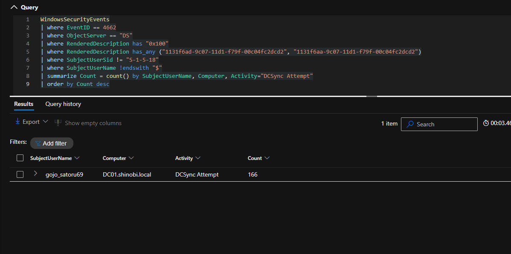

Detection & Telemetry (Silver Ticket Persistence)
Attack Vector: The attacker utilized compromised service account hashes to forge Kerberos Service Tickets (ST) for specific services (HTTP, CIFS, RPCSS) on the Domain Controller (DC01). By injecting these forged tickets into memory (Pass-the-Ticket), they bypassed standard authentication and gained administrative access to sensitive shares and services without interacting with the KDC.
Key Log Sources:
Rubeus.exe and mimikatz.exe).Objective: Detect the presence and execution of offensive binaries used to automate ticket forgery and memory injection.
Logic: We monitor Sysmon telemetry for common offensive tool names or command-line arguments associated with Kerberos abuse.
KQL Query:
Sysmon_Events
| where EventID == 1
| where CommandLine has_any ("silver", "kerberos::ptt", "kerberos::golden", "mimikatz", "Rubeus.exe")
| project TimeGenerated, Computer, User, Image, CommandLine
Analysis:
WRS01.shinobi.local.mimikatz.exe was used at 8:26 AM and 9:23 AM for initial credential harvesting and ticket injection.Rubeus.exe was utilized starting at 9:37 AM to execute Kerberoasting (kerberoast), password hashing (hash), and finally Silver Ticket forgery (silver) for the HTTP/DC01 service.Objective: Detect the weaponization of forged identities as they connect to critical infrastructure from unusual source IPs.
Logic: We monitor Event ID 4624 (Logon Type 3 - Network) on the Domain Controller for high-privileged accounts originating from workstation subnets.
KQL Query:
WindowsSecurityEvents
| where EventID == 4624
| where IpAddress has "192.168" and IpAddress !has "192.168.56.10" // Source is not the DC
| summarize Count = count() by Computer, TargetUserName, TargetDomainName, IpAddress, AuthenticationPackageName
| order by Count desc
Analysis:
DC01.shinobi.local originating from the attacker/workstation IP 192.168.56.50.Administrator_full, Administrator_fixed, and Administrator_admin were used. These are likely "skeleton" users created during the forgery process to bypass specific detection filters.Objective: Detect the final stage of the attack where forged tickets are used to list or exfiltrate data from restricted file shares.
Logic: We monitor Event ID 5140 for access to administrative shares (C$, ADMIN$, IPC$) by accounts that do not have a legitimate business reason to access them from a workstation.
KQL Query:
WindowsSecurityEvents
| where EventID == 5140
| where Computer == "DC01.shinobi.local"
| where IpAddress == "192.168.56.50"
| summarize Count = count() by SubjectUserName, IpAddress, ShareName
| order by Count desc
Analysis:
Administrator identity to access \\*\C$ and \\*\ADMIN$ shares on the Domain Controller.\\*\Shinobi_backup share was also recorded, indicating the attacker was actively hunting for sensitive backup data for further credential harvesting.Objective: Detect the remote extraction of hashes via the DRSUAPI protocol without the attacker ever touching the DC's file system.
Logic: DCSync mimics a legitimate Backup Domain Controller requesting replication. This triggers Event ID 4662 on the DC. The critical anomaly is the Access Mask (0x100) combined with the specific Replicating Directory Changes All GUID (1131f6ad-9c07-11d1-f79f-00c04fc2dcd2) being requested by a user account rather than a Domain Controller machine account.
KQL Query:
WindowsSecurityEvents
| where EventID == 4662
| where ObjectServer == "DS"
| where RenderedDescription has "0x100"
| where RenderedDescription has_any ("1131f6ad-9c07-11d1-f79f-00c04fc2dcd2", "1131f6aa-9c07-11d1-f79f-00c04fc2dcd2")
| where SubjectUserSid != "S-1-5-18"
| where SubjectUserName !endswith "$"
| project TimeGenerated, Activity="DCSync Attempt", Computer, RenderedDescription
Analysis:
gojo_satoru69AuthenticationEvents reveals gojo_satoru69 was authenticating via NTLM from the Kali Linux IP (192.168.56.50) during the exact timeframe of the DCSync.
C$, ADMIN$) on workstations and restrict their access on servers to only designated management hosts (PAWs).klist) that has a duration exceeding the standard domain policy (10 hours).mimikatz.exe and Rubeus.exe.{kind=link}
{kind=link}
{kind=link}